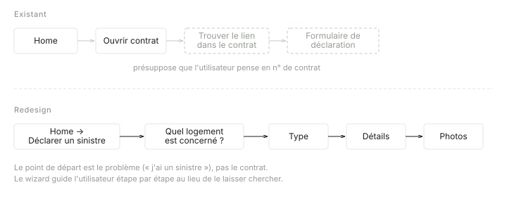
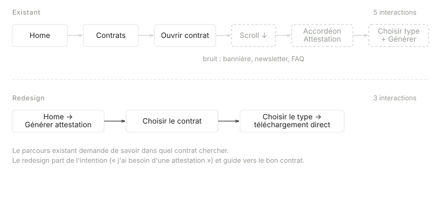
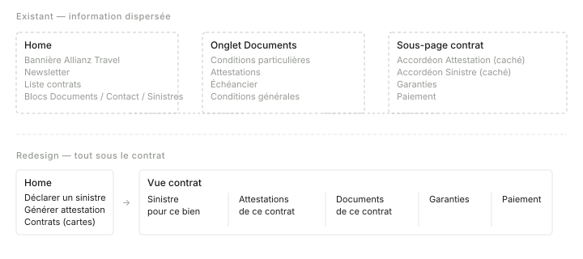

I am a product manager and I work as an individual contributor: a founder, a designer, a few engineers and me. I have never run a team of product managers and I am not applying to. What I bring is judgement on complicated B2B software, complicated because of the domain it models rather than by accident: HR and payroll, pharmaceutical transparency, quarry operations, driving licences.
The cases are ordered by what I think is most useful to a hiring manager, not by date. Each has a different shape because the work did: a sequencing problem reads as a sequence, an audit as a diagnosis, a repositioning as a before and after. Where a decision had a credible alternative, it is named, with the reason for rejecting it.
Two things are missing on purpose. No client screenshots: the work is under confidentiality and the mechanisms matter more than the pixels, so the diagrams are schematic redrawings; the exception is the last section, a redesign done on my own account. And no process diagrams: the method is described where it was itself a decision, as at UBAQ, and left out where it was not.
On AI, since it is a fair question in 2026: for eighteen months my own tooling has been built with Claude Code and Cowork, automations and agents that prepare work I then review, including the site this is drawn from and the Luko prototype at the end. I have not yet shipped a model inside a client's product, and I would rather say that than imply it.
 Ornikar
Ornikar
Getting 15,000 people through 96 administrations
First product manager, employee nº 8 · 2014–2016 · Regulated B2C marketplace
The situation
Learning to drive in France went through driving schools. Ornikar sold lessons without one, with neither a platform nor a legal framework for doing it online. I was the first product manager and built the team from there. From the outside the growth question looked like an acquisition question. It was not.
Where the product actually broke
A candidate registering for the test outside a school deals with the departmental service of their own département: ninety-six of them, each with its own forms, delays and reading of the rules. And the rules were written nowhere we could read them; they existed as practice in ninety-six offices.
The second constraint is the population: everyone who takes the test. Nothing can be assumed about the user, not their equipment, not their ease with written French, not whether their papers are valid. Every design that relied on such an assumption failed on the first hundred users.
The decision: prioritise by friction removed, not by acquisition
| What we did | The credible alternative | |
|---|---|---|
| Bet | Spend product effort on the registration path until a user who pays gets registered without our help. | Spend on acquisition to fill the funnel while registration stayed a manual, support-heavy process. |
| Why | On a regulated market, an acquired user who fails to get registered is a refund, a ticket and a bad review. Friction is the leading indicator; growth follows with a delay. | Faster to show a growth curve, easier to explain to investors. Compounds the registration problem with every cohort, and costs a support team the marketplace was not supposed to need. |
Three moves, in this order
The order is the point. Each phase produced the knowledge the next one needed, and none of them could have been skipped.
What it produced
- Zero to 15,000 paying users in eighteen months. The platform has since passed a million registrations.
- A registration pipeline that scaled with the cohorts instead of against them.
- Strategic design award, 2015. 145 million dollars raised between 2018 and 2021.
 Lucca
Lucca
Twenty views to three, and the pattern underneath
Fractional product director · since 2023 · HR software, 13 modules, 7,800 customers
The setting
Lucca's thirteen modules share an employee record, a permission model and a validation chain. A design decision taken in one of them surfaces in all the others, so there is no such thing as a local fix. I work directly with the head of each business suite, on the design system, on new product work, on product-led growth, and on the slow job of taking apart flows and administration tools that carry twenty years of accumulated decisions.
Salary review: twenty views to three
The salary review tool had twenty candidate views, each one answering a real request from a real customer. That is the difficulty: none of them was wrong. Shipping all twenty would have produced a tool nobody could learn, and picking by popularity would have produced the same tool with a longer delay.
Twenty views, each justified by a request. Three that cover the review as it is actually run.
That three-view version is the one sales demo today. A design decision became the commercial argument, which is the outcome I aim for on mature products: not a feature that ships, a version that sells.
Impersonation: the constraint worth writing down
In HR software a person's view, their leave, their expenses, their reviews, must routinely be opened by someone else: a manager approving, an assistant entering an absent director's leave, an administrator diagnosing a setting. The naive answer is a separate admin screen. Most software does that, and then maintains two representations of the same data that drift apart on their own.
Impersonation keeps one view.
The manager picks an employee, the screen becomes that employee's screen with their data, and every action is logged as the manager's. The mechanism is dull. What it forces is not: views can no longer be called "My requests" because someone else may be looking at them, so they get resource names. Navigation can no longer be organised by role, because impersonation erases that boundary, so it follows the workflow and permissions decide visibility. The author of an action and the owner of a record become two different things, modelled as such.
This had structured Lucca's first generation of products, and the knowledge had evaporated as the teams grew: people used the word without the consequences. I wrote it up as a pattern, context, problem, forces, solution, consequences, so that the next teams inherit the constraint rather than rediscover it. The full text is in Impersonation: anatomy of a pattern.
 UBAQ
UBAQ
An audit that found the organisation behind the interface
Product audit, then ongoing support · NTU platform, healthcare compliance
The brief
UBAQ sells compliance software to the healthcare sector. The product team could feel the interface working against them, could not say where, and had watched several fixes fail to hold. There was no UX profile in the company and the team lived in permanent firefighting.
How I chose to look, and what I chose not to
| Used | Set aside, on purpose | |
|---|---|---|
| Evidence | Five internal interviews and a direct walkthrough of the application. | End-user testing, analytics, heatmaps. |
| Why | Interviews cross what people believe the tool does with the constraints its builders were under: that is where the blind spots sit. | On a niche B2B product the quantitative signal is mostly noise, and testing would confirm symptoms the team could already see. |
| Scope | The gap between how the product behaves and what its users expect. | Business decisions and functional coverage: not what to build, only why what exists misbehaves. |
Level one: what the interface showed
How the system represented it, and how the sales users think about it: spend and clients.
- One object bundling three concepts the users keep separate: Norman's gulf of evaluation, in a form you can point at.
- A kanban with no drag and drop and non-linear stages: a table in disguise, promising a flow it does not show.
- A menu whose entries changed with the state of business objects.
- Forms holding four kinds of information with no hierarchy, two business flows on one screen. Density from refusing to choose.
Level two: why they persisted
Every one of those could have been fixed on its own; the useful question was why they had not been. Client requests became features without a value question. The roadmap was driven by migrating customers off the previous product, one churn risk at a time. With no UX or product expertise in the room, features landed where they were cheap to build. Each quick fix added complexity, which raised the pressure, which produced quicker fixes.
Three registers, chosen by depth
| Register | What it changes | Why not alone |
|---|---|---|
| Interface | Objects that match business concepts. A view built for the real flow instead of the kanban. Stable navigation. Ungrouped forms. | Repainting without consolidating: the same causes rebuild the same interface. |
| Skills | UX and product expertise, hired, borrowed or grown. | Better diagnosis of problems nobody has time to treat. |
| Process | A prioritisation framework, a way out of reactive mode, protected time for coherence. | A framework nobody can apply is a document. |
What happened
The navigation rewrite started and the engagement continued with the product team. The useful part was not the interface list but the organisational diagnosis: it gave the team words for what was blocking them, and they began arbitrating differently. Five interviews are enough if run as an investigation, not as a wish list. The full reasoning is in Inside a product audit.
 Guinet-Derriaz 1912
Guinet-Derriaz 1912
An information system for a group that had none
Information system from scratch · one year at two days a week · €100k budget
Starting point
An industrial group in marble: fourteen quarries, around ten million euros in revenue, customers abroad, and no information system. Each team kept its own files and its own version of the catalogue; sales quoted from one, operations worked from another, and no question crossing two teams had a single answer.
The sequencing decision: catalogue first
With that budget and two days a week, the order of work is the strategy. The temptation is to start with what people ask for: tools for sales, tools for the quarries. I started with the catalogue, because every tool would have sat on four incompatible versions of it, and the first disagreement between two tools would have sent everyone back to spreadsheets.
Result
Teams that had worked in silos now work off the same data. At that budget, most of the work is deciding what not to build.
 Synaxe
Synaxe
A sensor product that was a compliance product
Fractional CPO · six months · DUNE platform, dangerous-material operations
What was on the table
DUNE was positioned as a software layer on top of sensors fitted to cement trucks. The pitch was measurement: know what the truck carries and where it is. The interviews with operators pointed elsewhere. They move dangerous materials inside a regulatory framework that was not written for what happens on a site, and their daily difficulty is not measuring what they did. It is proving it afterwards.
Before and after
| As pitched | As repositioned | |
|---|---|---|
| Product | A sensor overlay for cement trucks. | A management and compliance tool for dangerous-material operations. |
| Problem | Technical: the data is not captured. | Regulatory: the data exists in practice and cannot be turned into proof. |
| Value | Better numbers. | A defensible record when the inspector comes. |
What I delivered
The pivot itself, argued from the interviews, then the mockups and the specifications of the new product, so the team had something to build rather than a strategy document to interpret. Six months, ending with a product definition the team could execute.
 monbanquet.fr
monbanquet.fr
A bespoke quote in thirty minutes
Head of product · 2017–2019 · Online caterer working with independent artisans
The problem in one sentence
Every order is a bespoke quote, and the quote has to hold the margin while respecting constraints that are not deterministic: picking, deliveries, and how loaded each kitchen is on that date. A price that is right on paper can be impossible to honour, and the salesperson writing it has no way of knowing which.
The tool
The constraints went inside the generation rather than being checked afterwards, so the salesperson never sees a menu the operation cannot deliver. Competitors took several days to produce the same quote.
What it produced
- Acquisition funnel up by fifty percent.
- "That is what saved the company", according to the CEO at the time.
- The company was acquired by B2B Food Group in 2020.
Luko by Allianz Direct
An unsolicited redesign, with the screens
Side project · March 2026 · Insurance customer area · Built with Claude in a few hours
Why this one is here
Unsolicited redesigns were a Dribbble fashion ten years ago and were rightly criticised: designing on a napkin without the product's real constraints is too easy. I include this one anyway, for two reasons. It is the only work on this page whose screens I own. And it shows what I do when nobody is paying me to do it, which is a fair signal of how I think.
I have been a Luko customer for years. I needed a liability certificate, and getting it meant opening the contract, finding the right accordion, understanding the certificate types, then generating the document. I talked it through with a former member of the Luko team, who confirmed the diagnosis: after the acquisition the team had changed a lot and product decisions had become hard to get built.
The audit, in three findings
Positioning. The customer area could not decide whether it was a management tool or an acquisition channel, and a product that serves two contradictory jobs fails at both. Trust. The chat switched to English when it crashed, near-empty pages loaded slowly, and a refresh could return an unrecovered 503 with the page in raw text, cookie banner included. Perceived performance is read as reliability. Hierarchy. Documents lived in three places, the home page blocks read like marketing pages, the newsletter prompt was more visible than the contracts, and an Allianz Travel banner followed you into the certificate form. The user's model, "I manage my insurance", did not match the architecture, "here are our offers".

The rule that drove the prototype
A policyholder logs in for one of two reasons: get a document, or report a claim. Everything that does not serve those two was removed. Three iterations followed, each driven by one principle. Progressive disclosure: the claim starts on the home page with the choice of property, actions appear in the context of each contract. Wording as UI: "add a contract" becomes "get insured", a system action replaced by the user's intent, and the real catalogue replaces a generic button that promised nothing. Proximity: the Documents tab disappears, documents belong to their contract, the profile sits under the avatar, and navigation goes from three tabs to none.

Reporting a claim: from the contract to the problem
Today, reporting a claim means finding the right contract first, then a link buried in its sub-menus, which presumes the user thinks in contract numbers rather than in the problem they have. The redesign starts from the problem, on the home page, and a five-step wizard (property, type, details, photos, confirmation) never sends the user back to a contract.


Getting a certificate: five interactions to three
From the home page the user clicks, picks the contract, and sees the four certificate types at once (liability, school, venue hire, holiday rental) with their use case as a subtitle. One click downloads the PDF. The current path takes five interactions, a scroll and an accordion.


The contract view: co-location
Each contract gets its own page: address, status, dates and yearly price at the top, then the claim for that property, then the certificates for that contract, then its documents with their dates, then guarantees, insured persons and payment as accordions. The original scatters these across the home page, a Documents tab and the contract sub-pages. The redesign puts each piece of information in the context that gives it meaning.


The prototype is live at dist-neon-delta-32.vercel.app and the full case is in Case study: Luko redesign with Claude. Audit, iterations and screens were produced with Claude in one short session: the reasoning is the work, the tool makes it cheap to show.
Before, and elsewhere
Two earlier roles, briefly
LuccaEmployee nº 10, 2011–2014First UX designer. I created the design function and reworked the early modules so they held together as one suite. Onboarding a new customer went from three days of implementation to forty-five minutes.
 zoneadsl.comHead of product, 2019–2020
zoneadsl.comHead of product, 2019–2020A broadband comparison site with 1.2 million visitors a month on a monolith. I rebuilt the acquisition funnels and the CMS and helped move the organisation to a product model. The information architecture is still the one in use.
Education
- Le Wagon, full stack developer bootcamp, batch 30
- Strate, Paris, industrial and interaction design
- Grenoble École de Management, innovation management
- Saint-Jean de Douai, CPGE
Writing
- The bias of software, March 2026
- An unsolicited redesign of Luko by Allianz Direct, March 2026
- Inside a product audit, June 2025
- Impersonation, anatomy of a pattern, March 2025
- Compliance is not a feature, November 2024
- All articles →
Full cases and articles on gildas.fyi. Happy to walk through any of these on a call.